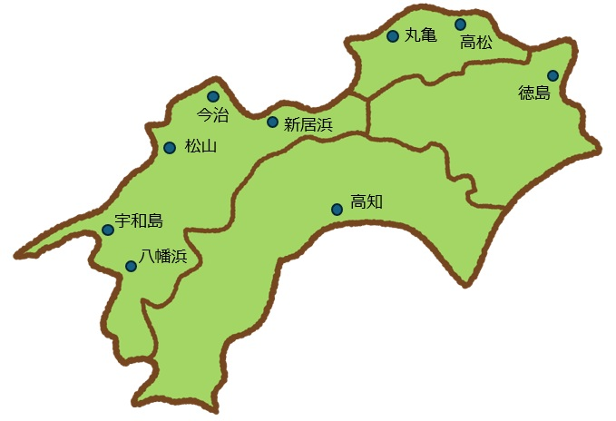

友の会は、1930年にジャーナリストで教育者の羽仁もと子を中心に、雑誌「婦人之友」の愛読者によって生まれた団体です。 2024年度現在、国内に173、海外に8の友の会があり、約13,500人の会員が、健全な家庭生活をつくり、社会の進歩に役立ちたいと、年代を超えてともに学び励みあっています。 四国4県には、9つの友の会があります。下記の地域をクリックしてください。各地域のHPに移動できます〔HPがない友の会もあります〕。

会員のページへ